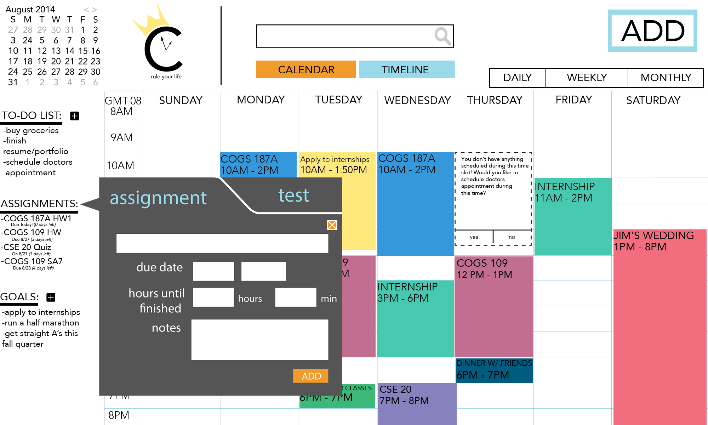
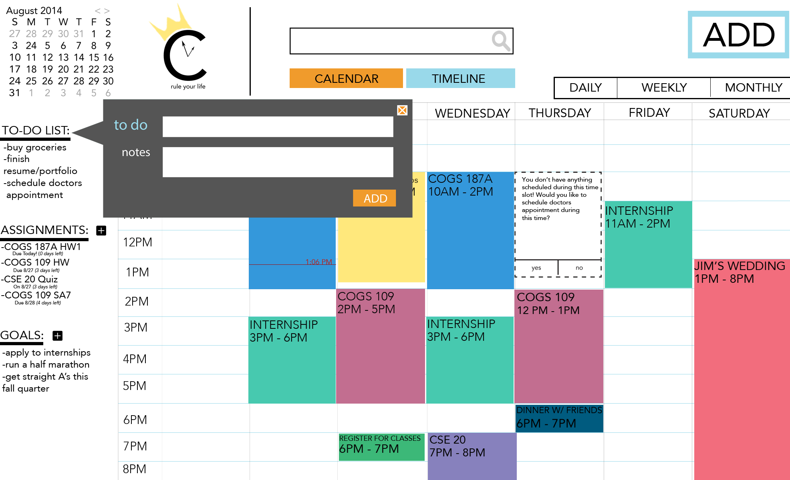
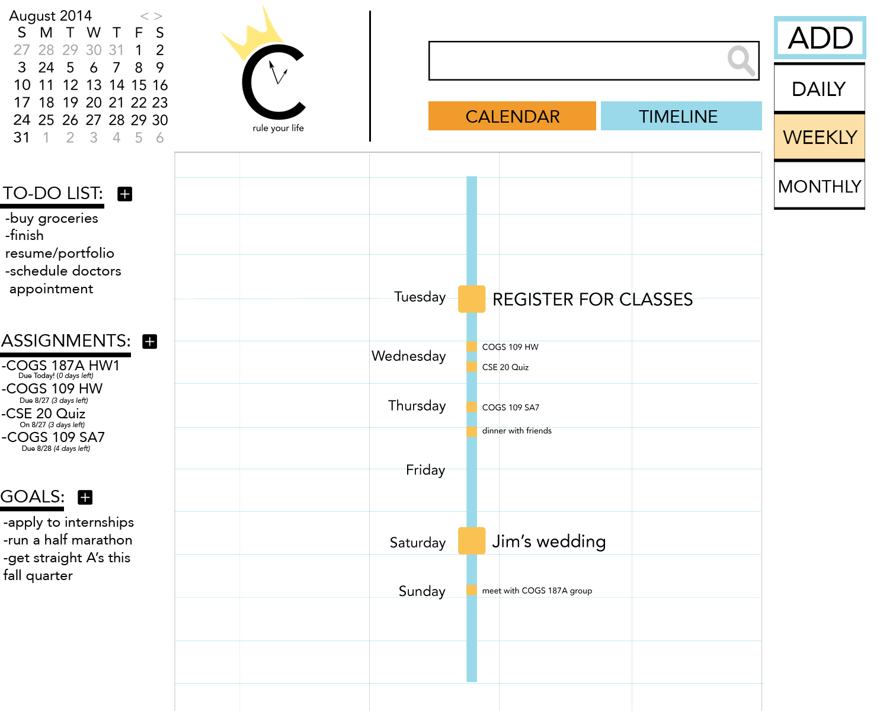
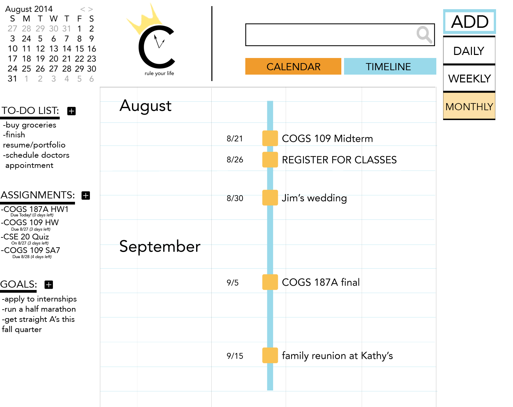

DURATION: August 2014 - September 2014
ROLE: UX / UI Designer & Front-End Developer
TOOLS: Contextual Inquiry, Ethnographic Studies, Adobe Creative Suite, Front End Developing (HTML, CSS, JS/JQuery), Storyboarding, Wireframing, Prototyping, Work Flow Modelling
DESCRIPTION: goal-based calendar to maximize time so students can fulfill their goals
COLLABORATORS: Kaitlin Garriott, Nick Gibson, Michael Lee, Melinda Chu
DELIVERABLES: Final Presentation | Website
GOALS
The user can add their long-term and short-term goals, such as training to run a marathon throughout the quarter, or even a life-long dream of becoming a doctor to help people. CROWN will continue to remind students of these goals to motivate them to work hard throughout the quarter and the year.
CROWN will suggest slots of free time to work on their goals to maximize their free time. (You don't have anything scheduled during this slot! Would you like to apply to internships during this time?)
The user can add their long-term and short-term goals, such as training to run a marathon throughout the quarter, or even a life-long dream of becoming a doctor to help people. CROWN will continue to remind students of these goals to motivate them to work hard throughout the quarter and the year.
CROWN will suggest slots of free time to work on their goals to maximize their free time. (You don't have anything scheduled during this slot! Would you like to apply to internships during this time?)
The user can add CROWN's suggestions into their calendar to know and plan to work on their goal during the suggested time period.
WHY: We wanted to make this time-management calendar based on GOALS because studies [ 1 ] [ 2 ] have shown that in order for people to be motivated, they need to believe in and be passionate about what they are doing. The need for students are for something to constantly remind them about their end goals and what they believe in, so they can be motivated to continue working towards their goal. Students also often forget about the goals that aren't the most urgent (like running a marathon as opposed to studying for an upcoming midterm), but these goals contribute to making the important, urgent, and they cannot be forgotten, so free time should be maximized for these goals.
ASSIGNMENTS & TESTS

The user can add to a list of assignments and tests to remind themselves of when it is due. Students can also input the amount of time they think they need to study for the test, and CROWN will offer suggestions on when to start studying based on the amount of free time the user has and the due date of the assignment or test.
WHY: Students are often cognitively overloaded with the number of things they are involved in. The due dates and test dates often get muddled in the midst of everything, so students often don't start their assignments early enough due to the fact that they can't remember the dates of all their assignments and tests.
TO - DO LIST

The user can add to a list of things to do, and CROWN will remind the user to remember to do these tasks in their calendar.
WHY: it's hard to remember the tiny things that need to get done, and even the small goals that come on a daily basis. Even though they are tiny, they all help contribute to making life move along as the user continues to focus on what they're passionate about. This helps fulfill the tiny things that need to get done that are not a part of the calendar (like scheduling a doctor's appointment), and the small goals (like finish adding the final touches to your personal portfolio).
EVENT & CLASS
Students can add their events and repeating classes in their calendar and in our new feature, the timeline, which utilizes the importance and priority that the user sets for their events.
WHY: since this time-management calendar is geared towards students, because students have many separate things they need to take care and worry about, the main priorities for a students on a regular day without anything due is going to class and attending any events they need to for their many involvements. Some of these events may be more important than others, such as an interview with Apple over a professor's office hours, and they need to be differentiated based on each individual.
TIMELINE



WHY: We noticed that the traditional calendar view does not differentiate between important (exams and weddings) and less important events (repeating classes). However, important events should be given more attention and time (cognitive effort) and are often more urgent. The point of the timeline view is for a different time visualization and for behavior change. The timeline view offers a new and quick way to see how close or far apart events are, indicating whether or not the student needs to make a decision in light of knowing how many important events are approaching. Therefore, CROWN offers the timeline view for each student's personal calendar, which is a new way to visually interpret time based on priority and importance.
The total number of priorities offered is three. The first and lowest priority, indicated by a small square on the timeline, is for less important and repeating events. The second priority, indicated by the medium square, is for events that are slightly more important, such as small assignments due or events with friends. The third priority, indicated by the largest square, is for events that are extremely important that need attention and time, demand urgency, and demand a change in action. For example, if a student saw that a final, with the highest priority and is the first thing they see, was coming up soon, they would probably start studying for their final.
For our timeline view, CROWN offers a daily, weekly, and monthly view. In the daily view, all three kinds of priorities will be shown for the particular day. In the weekly view, only the medium and high priority events will be shown, and the time will still remain static. This is not only to highlight the important events that need attention, but also to prevent crowding of events. In the monthly view, only the high priority events will be shown to highlight only the extremely important events in the student's life.
THE PROCESS

logo sketches

logo showing

storyboard (1)

storyboard (2)

storyboard (3)

features brainstorming (1)

features brainstorming (2)

User flow and features

homescreen (prototype)

calendar (prototype)

add event (prototype)

original timeline idea

brainstorming timeline features

brainstorming timeline features

crown group!

silly picture!
PERSONAL CONTRIBUTION & GROWTH
During the course of conceptualizing and making this website, I personally learned Adobe Photoshop and Illustrator, as well as HTML, CSS, and Javascript / Jquery in the span of two weeks. The first 3 weeks were spent conceptualizing and prototyping our ideas and designs, while gaining user feedback and learning usability and information architecture concepts, and the last two weeks were spent coding the website. I personally coded the HTML and CSS of the calendar page and timeline page, and coded the JS so that the user can add to their to-do list, assignments / tests, goals, and the events. This is my first website, and despite a high learning curve due to the complexity of our project and the time constraints, I started to fall in love with web design during this project, giving me another potential path for the future. This experience was also rewarding because we successfully conceptualize ideas based on psychological studies for motivation and behavior change, which excites me to see Psychology and research used in the realm of Human-Computer Interaction. Our timeline view was also extremely rewarding, because first, it was a COMPLETELY new way of visualizing a personal calendar that no one had thought of before. Secondly, this was a complex idea in the realm of Cognitive Science, combining information visualization and time, so we decided to continue to explore this realm further by continuing it in the next quarter.